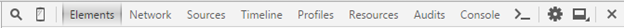

Typically, a web browser includes a powerful set of developer tools. These tools help you to develop, test, debug and optimise your web sites and applications directly from the browser. In addition, with developer tools you can study internals of existing web sites and applications.
-
With Windows desktop, create a new text file with the name third.html and save it to the folder oswd on Myy server (M:\oswd\third.html).
-
Copy/paste the following code to the file third.html:
<!DOCTYPE html>
<html>
<head>
<title>Developer tools </title>
<style type="text/css">
input {
background: #EEFFEE;
border: solid;
border-width: 1px;
font-size: 20px;
}
</style>
</head>
<body>
<img src="http://www.haaga-helia.fi/sites/all/themes/haagahelia/images/logo.png" alt="HH Logo"> <br>
<input type="text" id="myTextField" value="Hello World!"/>
</body>
</html>
-
If the Chrome web browser is not installed yet, then download and install it from https://www.google.com/chrome
-
Start Chrome.
-
Open the Developer Toolbar as follows:
Select the Chrome menu at the top-right of your browser window, then select More Tools > Developer Tools
The Developer Toolbar shows as follows:

-
In Chrome, open the file third.html
-
Find answers to the following three questions:
-
How long did it take to load the image logo.png?
In Developer Toolbar, select Network > All > logo.png
Then see the values in the Time column and in the Timing tab.
-
What happens when you write the following text into the Console window and press Enter?
document.getElementById("myTextField").value
-
How many pixels (px) is the padding of the input element in the HTML page?
In Developer Toolbar, select Elements > Click on the input element on the HTML source > Styles
Submit your answers as plain text in the following format:
- X ms
-
something
-
Y px